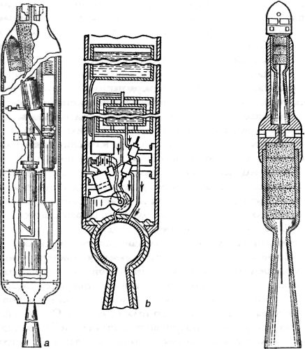

Ракеты и патенты Роберта Годдарда
Помню, как в годы, которые нынче принято называть «застойными», нам, ученикам средней школы, внушали, будто бы главное преимущество социалистической системы хозяйствования перед капиталистической заключается в том, что при социалистическом планировании любое изобретение или рационализаторское предложение сразу же становится достоянием всего общества, что стимулирует прогресс, а вот у «загнивающего» Запада аналогичное изобретение является собственностью владельца патента и только от его прихоти зависит, получит это изобретение широкое распространение или нет.
Впоследствии, будучи студентом Политехнического института, я убедился, что первая часть этого тезиса, мягко говоря, не соответствует действительности: несмотря на необходимость регулярных публикаций в специальных журналах, многочисленные доклады на конференциях и защиты диссертационных работ, всякий уважающий себя руководитель научной группы все «ноу-хау» старался держать при себе; военные же спецы из «ящиков» в принципе не делились достижениями с гражданскими, а то, что это вовсе не способствует «стимуляции прогресса», никого не интересовало. Именно поэтому, в частности, мы имеем сегодня лучшие в мире истребители и довольно посредственные аэробусы.
Что же касается второй части, то и тут не все правда, В большинстве случаев владельцам патентов невыгодно держать изобретение при себе, изобретение должно приносить прибыль, и если оно кому-нибудь нужно, его раньше или позже купят. Вопрос только в одном: раньше или позже?
Роберт Годдард, которого вполне справедливо называют «пионером ракетостроения», прекрасно ориентировался в реалиях своего общества, понимал значение патента и не относился к числу «полоумных изобретателей», каким его считали соседи. Но, как говаривал Иисус из Назарета, нет пророка в своем Отечестве, и патенты, которые могли бы дать Америке решительное преимущество в освоении космоса, остались невостребованными.
В ряду других «пионеров ракетостроения» Роберт Годдард стоит особняком. В нем нет ничего от той бескорыстной мечтательности, которая отличала других энтузиастов идеи межпланетных путешествий. В трудах Годдарда вы не найдете описаний космических кораблей будущего в духе Циолковского или орбитальных заправочных станций в духе Германа Оберта. Годдард был прагматиком и писал только о таких системах, которые можно было бы построить уже сейчас и на конкретные деньги. Кроме того, американский инженер очень скупо распространялся о своих идеях и достижениях, считая ракеты (по образному выражению Фрэнка Малины) «своим частным заповедником». По этой же причине он терпеть не мог «конкурентов» и патентовал для защиты от них каждую закорюку.
Проблемой полета в космическое пространство Годдард начал интересоваться еще в юности — в 1899 году. Поводом для этого стало увлечение романами Герберта Уэллса и его американских подражателей. Через два года Роберт написал небольшую статью «Перемещение в космосе», где, в частности, анализировал возможность запуска снаряда в космос при помощи пушки. По Годдарду, для запуска 1 фунта (454 грамма) полезного груза на Луну необходимо зарядить такую пушку 500 фунтами (227 килограммов) пироксилинового пороха. Полезным грузом в данном случае являлся пакет с магниевьм порошком, вспышку которого па затененной части Луны можно было бы увидеть в мощный телескоп.
В 1906 году Годдард обратился к проблематике использования для движения в космосе реакции заряженных частиц. В октябре 1907 года он написал работу «О возможности перемещения в межпланетном пространстве», в которой размышлял о средствах поддержания жизни в космосе, метеорной опасности и борьбе с ней, реактивном способе движения на энергии пороха и анализировал возможность применения энергии распада атома,
В 1909 году Годдард впервые записал свои соображения и расчеты по теме космической ракеты и оптимальных топлив для нее.
Интересы Годдарда на ранней стадии его деятельности были весьма разнообразными. Так, в его записях, которые он, начиная с 1906 года, вел регулярно, содержатся такие идеи, как использование для полета магнитного поля Земли; создание реактивной тяги для движения аппарата в космосе за счет электростатического эффекта (с нейтрализацией потока ионов за космическим аппаратом); проведение фотосъемки Луны и Марса с облетных траекторий; производство на Луне кислорода и водорода для использования в качестве ракетного топлива и так далее в том же духе. Все эти богатые идеи Годдард преподносит чрезвычайно скупо, давая им лишь самую общую оценку.
Само по себе любопытно обоснование необходимости разработок по космической тематике, которое приводит Годдард в одной из своих статей. Опираясь на пророчество англичанина Джорджа Дарвина о том, что когда-нибудь Луна упадет на Землю, тем самым перечеркнув историю человеческой цивилизации, Годдард призывает готовить целый флот космических кораблей, который позволит в критический момент эвакуировать население в более пригодное для жизни место.
В 1912–1913 годах, уже будучи дипломированным инженером и доктором философии, Годдард разрабатывает свою собственную теорию движения ракет, а в 1915 году приступает к стендовыми экспериментам с твердотопливными ракетами, определяя их эффективность при различных конфигурациях, размерах и видах топлива. Тогда же он провел сложный опыт по доказательству существования и отсутствия уменьшения тяги ракетного двигателя в вакууме.
В июле 1914 года Годдард получил патенты США на конструкцию составной ракеты с коническими соплами и ракеты с непрерывным горением в двух вариантах — с последовательной подачей в камеру сгорания пороховых зарядов и с насосной подачей в камеру двухкомпонентного жидкого топлива. Исторический приоритет Годдарду в этой области не принадлежит: как мы помним, жидкостную ракету для космических полетов и вывод уравнения движения ракеты еще в 1903 году предложил Циолковский.

Начиная с 1917 года, Годдард занимался конструкторскими разработками в области твердотопливных ракет различного типа, и в том числе многозарядной ракеты импульсного горения, подобной той, которую предлагал Кибальчич. Испытания этой ракеты, проведенные в ноябре 1918 года, были не слишком удачными, но Годдард в течение еще трех лет пытался создать работоспособную конструкцию.
В 1921 году американский конструктор решил перейти к экспериментам с жидкостно-ракетными двигателями, используя в качестве окислителя жидкий кислород, а в качестве горючего — различные углеводороды. Первый запуск ЖРД на стенде состоялся в марте 1922 года.
Неудачи с созданием небольшой ракеты с насосной подачей топлива заставили Годдарда перейти к конструированию простейшей ракеты с вытеснительной системой подачи (топливо — жидкий кислород и бензин). Впервые успешный полет такой ракеты — первой в мире на жидком топливе — состоялся 16 марта 1926 года в местечке Обурне (штат Массачусетс). Ракета, получившая название «Nell», со стартовым весом 4,2 килограмма достигла высоты 12,5 метра и пролетела 56 метров. Весь полет продолжался 2,5 секунды.
17 июля 1929 года Годдард впервые осуществил запуск ракеты с приборами и фотокамерой на борту. Ракета со стартовым весом 25,7 килограмма достигла высоты 28 метров, и приборы (барометр и термометр) после приземления оказались неповрежденными. Полет привлек внимание местных жителей, решивших, что где-то поблизости разбился аэроплан, и Годдарду не удалось сохранить факт проведения испытания в тайне. Впоследствии он напишет об этом так:
«Мы уже почти упаковались, когда из-за холма со стороны жилого дома на ферме я увидел около дюжины автомобилей, поднимающих большое облако пыли; первые две машины были каретами скорой помощи. Я спросил двух офицеров, не смогут ли они не поднимать шума вокруг этого дела. В ответ один из них спросил: «Видите ли вы этих двух приближающихся людей?». Я ответил: «Да, А что?» — «Это репортеры, один из „Пост", а другой из „Газетт"», — был его ответ. Я пытался договориться с редакторами двух городских газет, чтобы не поднимать шумиху, но в это время уже выходили два экстренных выпуска.
Я намеревался вообще не делать какого бы то ни было заявления, но, когда узнал, что во всех сообщениях важнейшее место отводилось исключительно ракете для полета на Луну, которая якобы взорвалась в средних слоях атмосферы, я опубликовал короткое заявление следующего содержания: «Испытание сегодня после полудня было одним из длинной серии экспериментов с ракетами, использующими совершенно новое топливо. Не предпринималось никакой попытки достичь Луны или что-нибудь другое столь же эффектного характера. Ракета обычно шумит, и этого достаточно, чтобы привлечь значительное внимание. Испытание было совершенно удовлетворительным; в воздухе ничто не взрывалось, и не было причинено никакого ущерба, исключая инцидент, сопутствовавший приземлению». На следующий день я опубликовал то же самое заявление, заменив лишь слова «совершенно новое топливо» на «жидкое топливо»…
В прессе было много любопытных комментариев относительно характера полета. Все сошлись на том, что ракета летела с громким гулом, слышимым, как говорили, в радиусе 2 миль. Некоторые упоминали громкий монотонный шум, как у пропеллера аэроплана перед взлетом. Конечно, пока давление существенно не возрастет, сгорание происходит неравномерно. Во время предыдущих испытаний возле пусковой башни было обожжено много зелени, и это также вызвало комментарии. Возбудили интерес камни, находящиеся прямо под соплом. Они были навалены на трубчатую раму, к которой крепились две трубчатые направляющие диаметром / дюйма, чтобы удерживать эти направляющие в возможно более строго вертикальном положении за счет давления, создаваемого таким образом. Камни сильно почернели от дымного бензинового пламени и раздробились в значительной степени из-за длительного воздействия тепла во время испытаний, при которых ракета не покидала башню.
Репортеры измерили и сфотографировали башню и укрытие, а также тщательно исследовали место, где приземлилась ракета».
После этого события Годдард, получив крупную финансовую помощь Фонда Гуггенхеймов, оборудовал небольшой полигон с мастерской близ Розуэлла (штат Нью-Мексико). Интересно, что через 15 лет после этого в 160 километрах от испытательной площадки Годдарда был воздвигнут полигон Уайт-Сандс для изучения «космического наследия» Третьего рейха.
К сентябрю 1930 года Годдард построил на своей площадке небольшую мастерскую-лабораторию размером 9 на 17 метров, а в 24 километрах от нее воздвиг наблюдательную вышку высотой 18 метров, которая ранее использовалась в Оберне и форте Дэвенс. Вторая вышка, высотой 6 метров, была построена вблизи мастерской, где велись стендовые испытания.
Первый полет состоялся 30 декабря 1930 года. Годдард запустил ракету со стартовым весом около 21 килограмма и длиной 3,4 метра Высота, достигнутая ракетой, составила 600 метров, а максимальная скорость — свыше 800 км/ч.
В дальнейшем Годдард много внимания уделял вопросу стабилизации ракеты на вертикальной траектории. Проведя исследование по различным видам управляющих устройств, он остановился на идее использования гироскопически управляемых рулей, помещенных в потоке истекающих газов (позже Годдард добавил к ним также аэродинамические рули). На это устройство был выдан патент за № 1879187.
Первый полет ракеты с гироскопически управляемыми рулями состоялся 19 апреля 1932 года. А в марте 1935 года ракета достигла уже высоты около 1,5 километра при дальности 4 километра. Вес ее составлял 60 килограммов. В мае того же года Годдарду удалось достичь высоты 2,3 километра при хорошей стабилизации ракеты. Максимальный же подъем ракет Годдарда составил около 2,8 километра (март 1937 года).
В октябре 1934 года Годдард продолжил свою работу в Нью-Мексико. Главная трудность в экспериментальной работе этого и последующего периодов была, по-видимому, связана не с двигателем ракеты, а со стабилизирующим устройством. Вначале был испытан маятниковый стабилизатор, работавший нормально только в момент взлета, что объяснялось свойством маятника отклоняться в направлении наибольшего ускорения. Когда ускорение превышает допустимую для данного маятника норму, он перестает выполнять свои функции. Годдард понял это и решил использовать гироскоп.
Наибольшее внимание общественности привлекли два последних испытания из этой серии опытов. Профессор Годдард сделал о них сообщение на заседании научного общества в конце 1935 года и продемонстрировал два кинофильма, снятых во время испытаний. Из-за этого все решили, что пуски ракет были только что произведены, на самом же деле испытания состоялись 31 мая (высота — 2250 метров) и 14 октября 1935 года (высота — 400 метров). В этих фильмах была четко видна работа стабилизатора и двигателя, и если первый функционировал хорошо, то последний действовал явно неудовлетворительно. Ракеты оставляли за собой заметный хвост дыма, а иногда ниже сопла наблюдались вспышки в результате взрыва паров бензина в воздухе. Вес этих ракет составлял соответственно 26 и 38 килограммов. В этих ракетах кислород подавался в двигатель под давлением за счет наддува, создаваемого в баке, а горючее — с помощью небольшого центробежного насоса.
После трагедии Перл-Харбора Годдард предложил свои услуги Военно-морскому флоту США и некоторое время работал в Аннаполисе над созданием стартовых ракет для самолетов морской авиации. Он умер внезапно 10 августа 1945 года после неудачной операции горла.
За период между 1914 и 1940 годами Роберт Годдард получил 83 патента на изобретения в области ракетной техники. После его смерти на основе архивных материалов на имя Годдарда был зарегистрирован еще 131 патент.
Но заметного влияния на развитие американской космонавтики ни его патенты, ни его ракеты не оказали. До самой войны в Америке мало кто интересовался реальными ракетными разработками, а падкая на дешевые сенсации пресса создавала Годдарду антирекламу в научных кругах, публикуя статьи о «строителе лунных ракет», переполненные совершенно фантастическими подробностями.
Сегодня, задним числом, американцы сделали из Годдарда культовую фигуру: изданы полные собрания его сочинений, имя Годдарда присвоено Центру космических полетов НАСА, учреждена медаль, вехи его жизни отмечаются с завидной регулярностью. Однако даже в 1946 году, когда в США был поднят вопрос о начале крупных ракетных разработок, за основу была все-таки принята ракета Вернера фон Брауна — «А-4» («Фау-2»).